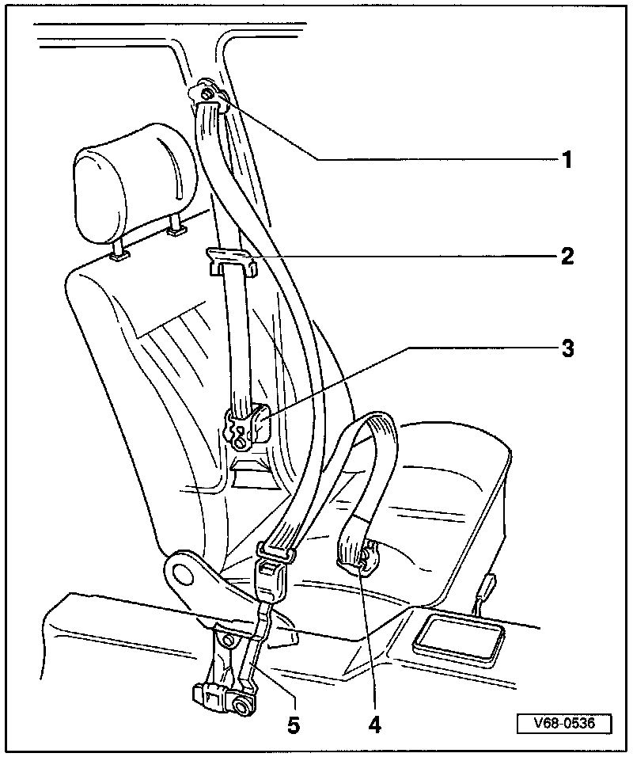

Front Belt Reel and Anchor Rail Without Tensioning Unit

1 - Belt height adjustment fitting
- Refer to removal procedure below.
2 - Belt guide
- Secured with two Phillips-head screws
- Tightening torque: 1.5 Nm (13 in lb.) (trim removed)
- Mounting position determined by retaining lugs
- Tightening torque (hex bolt): 40 Nm (30 ft lb)
3 - Belt reel
- To remove belt reel, first remove trim at top and bottom of B-pillar, and remove sill panel trim
4 - Front anchor
- To remove, first remove sill panel
- Refer to procedure(s) below. 2 and 4 door are different,
5 - Belt buckle
Removing and Installing Front Anchor (2-door):

1 - Hex bolt
- Tightening torque: 40 Nm (30 ft lb)
2 - Cap
3 - Guide rail
Removing Front Anchor (4-door):

1 - Hex bolt
- Tightening torque: 40 Nm (30 ft lb)
2 - Seat belt
Installing:
- Align metal fitting with retaining lug (arrow).
Removing and Installing Belt Buckle:

1 - Belt buckle
2 - Hex bolt
- Tightening torque: 40 Nm (30 ft lb)
3 - Clip (slide)